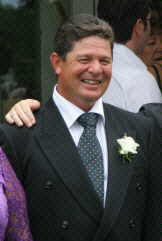

Page written in 2009... Well, I�m in year 11 (form 5) at Bethlehem College, my school in
Tauranga, Bay of Plenty. I�m a very musical person,
and absolutely love the music of years ago. My biggest musical
talent is singing. � I�ve been singing swing & jazz songs for a few
years now, I can�t get enough of the good old swing & jazz numbers by
Frankie, Lady Ella and more. I am currently studying: History,
Drama, and Information Technology, and hope to make a career as
a singer.
To the right is me singing a
cover of 'Almost Like Being In Love',
here is my YouTube link if the video fails to
load.
My family...

Lynden (my
brother in law) is a part time drum teacher
and is currently studying to become a
primary school teacher. Anneliese (my
sister) recently finished her bachelor of
management studies with 1st class honors,
and is presently working at the Tauranga
Police station.
Dad
(Bryan), works in the telecommunications
industry. Dad has a teaching
degree in primary school but enjoys doing
what he does now more.
Mum
(Lesley), is in middle management in an
international marketing company. She
has been working there for 12 years.
This is me,
Reuben. This photo was taken in June 2009,
after appearing on the Good Morning TV show,
Wellington.
We all live in Tauranga in
the Bay of Plenty. Tauranga is the fifth largest city in New
Zealand, and is quite popular for our warm and sunny
weather. Mount Maunganui is about 7 minutes drive from
Tauranga City, and is popular because of it's beautiful
sandy beach.
A new genre is introduced�
In 2007, my Nana & Grandad gave my parents Andr� Rieu At
Sch�nbrunn Vienna. I saw the case and wasn�t too interested in
watching it at all. But I was encouraged to watch the DVD
anyhow. ��. And WOW! I am so glad I did! All the pieces Andr�
performed on it I had never heard before, apart from one or two,
but the enthusiasm, people and music at the concert just enticed
me. It just made me feel so�. energetic and happy! The music is
just amazing! Ever since, I�ve watched most of his other DVDs. -
Playing them twice! He is just truly amazing! I bought Andr�
Rieu: The 100 Most Beautiful Melodies, and listen to it on my
iPod whenever I can. My Nana & Grandad and my parents and I
own altogether around 19 DVDs (I think), and often share them
together. *2009* I will be attending the Sunday concert in October,
along with my both my grandparents and my Mum & Dad. -We've got
the $199 tickets for row 22 :D *2010* I will be attending the Auckland concert in
October '10, along with my Nana at Vector Arena on the 6th of
May.
We're in row four this time. Wahooooo!
A website is born�
On Sunday the 17th of May 2009, my Grandma was staying with us,
we decided we�d just check up on our tickets to Andr�s concert
in NZ. After talking about what we should wear to the concert, we
thought we should watch one of his DVDs and take note! We put on
Andr� Live in Australia and watched it, second time for me. It
was just so amazing again! I had one of those moments of
inspiration and thought, I�m sure I can do something! So I
started creating a fan website for Kiwi New Zealand fans. I got
really into it, and finished it on the following Friday, the
22nd. So now it�s online!
There are a lot of New Zealand fans of Andr�
Rieu, and we are all going to give Andr� and his JSO an awesome
time in NZ. It�s going to be exciting for me and other New
Zealand fans leading up to the concerts.
I'm glad I can be apart of and share the Andr�
magic with fans from up, down and around from everywhere!

.JPG)